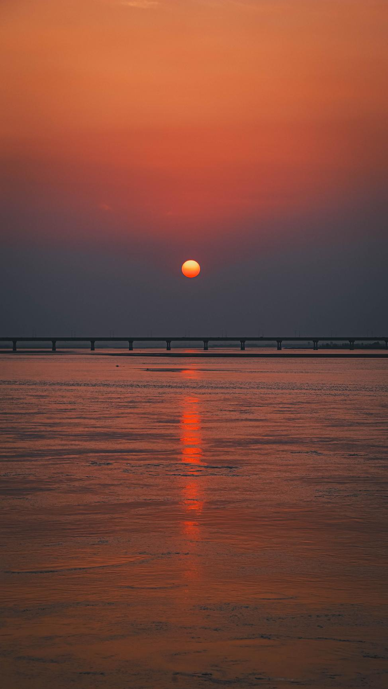

免责声明：本推荐文档版权归西电鹿鸣学会社团所有，本程序得到非正式授权后进行转载，请用户不要任意转载。以下内容和本程序无关，开发者对下面内容无任何担保。
即使是最有理想、最有激情的人，面对指向似乎沉沦的生活，也会痛苦，甚至蜷缩在一隅，不闻不问直至死去。沉吟的青年啊，请听听鹿鸣的鸣唱：它如炬的目光一直聚焦着底层，看着劳动人民创造历史的伟大力量，从蛰伏的地火，化作炽热的不住奔突的熔岩；一旦喷出，将烧尽一切野草，以及乔木，于是并且无可腐朽。
2024-2025学年，我们举办了许多专题活动，包括但不限于以下：
鹿鸣致力于为那些愿意沉下心来阅读书籍，从文字中汲取智慧认识世界并用以改造世界的朋友们提供一个具有人文气息的平台。在这里，所有的人文社科都能摩擦出思想的火花。恰同学少年，风华正茂，在思辨和智慧中挥斥方遒，在文学和哲学中激扬文字。 不用担心自己对人文社科领域了解不够——交流当然不该是有“知识”的人的特权。所以请加入我们，一起做思想的追光者吧！
图摄于黄河花园口